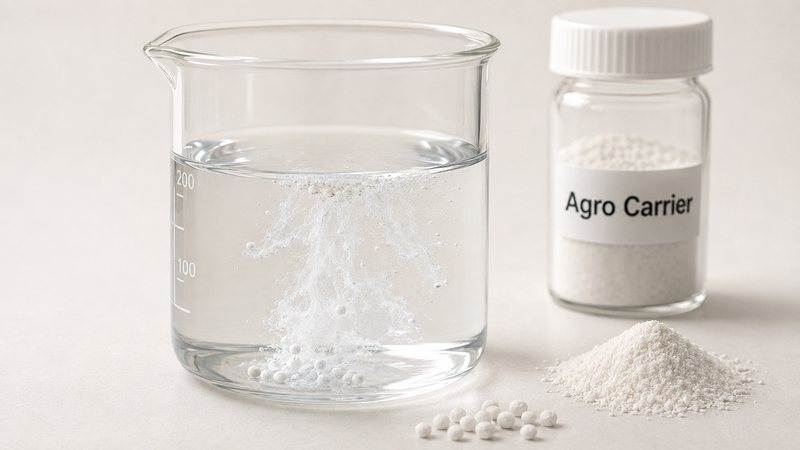

The three dosage forms load the carrier differently. WP rewards absorption capacity, WG requires absorption to be balanced against granule disintegration, and SC uses silica for rheology and anti-settling rather than carrying. A carrier at 200-250 g/100g oil absorption (ISO 4652) suits WP and WG; SC selection starts from structure instead.
Wettable powders ask the carrier to absorb and dilute active ingredient while remaining dispersible on addition to the spray tank. The controlling property is absorption capacity, because the carrier must hold technical-grade active without the powder becoming tacky, and the particle must wet out rapidly once it meets water.
Water-dispersible granules ask for the opposite balance. The same absorption capacity is needed to carry the active, but the granule must also break apart within seconds in the spray tank. A carrier that absorbs strongly and packs densely produces a granule that holds together too well, and disintegration time rises past specification. Granule strength and disintegration speed are in direct tension, and the carrier sits at the centre of that trade-off.
Suspension concentrates use silica for a third purpose. The active is already dispersed as a solid in a liquid continuous phase, so nothing needs carrying. Silica is present to build weak structure that resists sedimentation and hard-caking of the suspended active during storage, which is a rheology problem rather than an absorption problem.
When a water-dispersible granule fails its disintegration specification, the cause is more often carrier packing than binder level. A carrier with a coarse particle size distribution and moderate tapped density leaves interstitial voids in the granule that water can penetrate, so capillary rise breaks the granule from the inside. A very fine, densely packing carrier closes those pathways, and water then has to erode the granule from the outside surface inward, which is far slower.
Sieve residue matters for a different reason. Oversize particles in the carrier survive granulation intact and act as hard cores that persist after the surrounding matrix has dispersed, showing up as residue on the spray-tank filter. A carrier at D50 12-22 µm (ISO 13320) with 45 µm sieve residue at or below 0.15% (ISO 2591-1) gives enough void structure for rapid capillary disintegration while keeping the oversize fraction low enough to avoid filter residue.
| Property | Unit | VS-WG180 WG Carrier | Test method | Why it matters in WP / WG / SC |
|---|---|---|---|---|
| Oil absorption (DOP) | g/100g | 200 – 250 | ISO 4652 / DIN 53617 | Sets the technical-active load the carrier can hold in WP and WG |
| Particle size D50 | µm | 12 – 22 | ISO 13320 | Controls void structure and therefore granule disintegration rate |
| BET specific surface area | m²/g | 160 – 210 | ISO 9277 / DIN 66131 | Adsorption of liquid active and of surfactant from the formulation |
| Tapped density | g/L | 150 – 230 | ISO 697 | Predicts granule packing density and water-penetration pathways |
| Sieve residue (45 µm) | % | ≤ 0.15 | ISO 2591-1 | Oversize fraction that can persist as spray-tank filter residue |
| pH (5% aq. suspension) | — | 6.0 – 7.5 | ISO 6588 | Near-neutral; relevant to hydrolytically sensitive actives |
| Loss on drying (105 °C, 2 h) | % | 4.0 – 7.0 | ISO 787-2 | Moisture contributed to actives sensitive to hydrolysis |
WP selection starts at absorption capacity, WG selection starts at the absorption-versus-disintegration balance, and SC selection starts at rheology. A carrier chosen for a WP line will not automatically transfer to a WG line running the same active.
Divide the technical-active liquid fraction by the carrier oil absorption to establish the minimum carrier level, then confirm that the resulting powder passes wettability and suspensibility testing under CIPAC methods rather than by visual inspection.
Fix the disintegration specification first and select the carrier that meets it, then adjust binder and active loading within that constraint. Raising binder to fix granule friability almost always pushes disintegration time in the wrong direction.
Anti-settling in a suspension concentrate comes from weak network structure in the continuous phase. Confirm that carrier pH at 6.0-7.5 (ISO 6588) and residual moisture at 4.0-7.0% (ISO 787-2) are compatible with the active, because hydrolytically sensitive actives are the common failure mode.
Run granule disintegration and suspension stability after accelerated storage at elevated temperature. Both properties drift during ageing, and fresh-sample results routinely pass where 14-day stored samples do not.
A wettable powder carrier is selected primarily on absorption capacity, so the active can be loaded without the powder becoming tacky. A water-dispersible granule carrier must provide the same absorption while still allowing the granule to break apart in the spray tank, so particle size and packing density become co-equal constraints alongside absorption.
The most frequent cause is carrier packing rather than binder level. A finely packing carrier closes the interstitial voids that allow capillary water penetration, forcing the granule to erode from the outside inward. Selecting a carrier that leaves void structure — typically a coarser D50 with moderate tapped density — restores capillary disintegration.
In a suspension concentrate the active is already dispersed in a liquid phase, so silica is not acting as a carrier. It is used to build weak structure that resists sedimentation and hard-caking of the suspended active. Selection therefore starts from rheological contribution and compatibility with the active, not from absorption capacity.
Related: Agrochemical solution overview · Full grade specifications · All articles